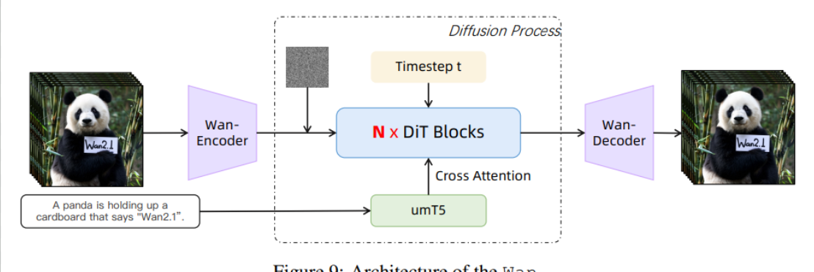
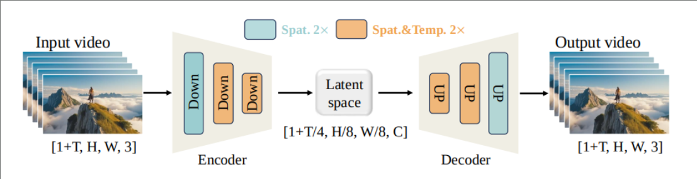
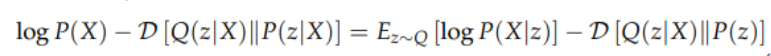
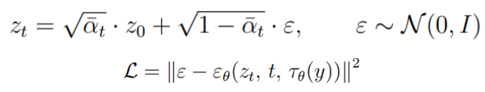
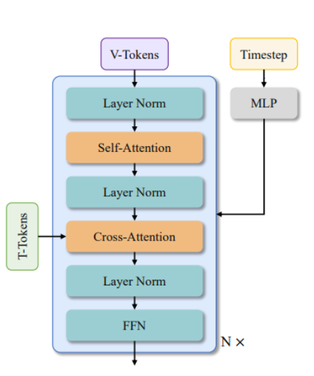
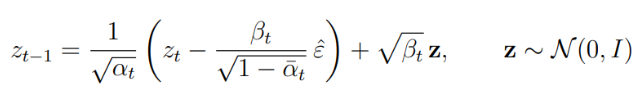

Skills: VAE, Diffusion Transformers, DDPM, T5, CFG
Broadly: video frames go into a VAE encoder to produce a compressed latent representation. That latent gets noised and denoised by a Diffusion Transformer (DiT) conditioned on a text prompt, and the VAE decoder reconstructs the final frames from the denoised latent. Implemented from scratch based on the Wan paper.

The VAE compresses a video of shape [1+T, H, W, 3] down to a latent of [1+T/4, H/8, W/8, C]. The encoder and decoder stack spatial-only downsampling blocks (which compress each frame independently) with spatio-temporal blocks that operate across both space and time simultaneously. The temporal compression is what lets the diffusion model work on a much shorter, cheaper sequence rather than every individual frame.

The VAE is trained by maximizing the Evidence Lower Bound (ELBO)

On the right side, there are two terms:
Ez~Q[log P(X|z)] — the reconstruction loss. Basically a pixel-level loss.
D[Q(z|X)||P(z)] — KL regularization. Generates a sample-able latent space.
The first training run produced this:
Every generated frame was identical, so I figured: posterior collapse.
The obvious fix seemed to be constraining the latent space to a finite codebook of learned embeddings (VQVAE). This forces the latent to represent real, discrete scene states. No more degenerate solutions! I did the research and built it out.
Then came the question of how to noise discrete tokens with DDPM. It's doable but it's awkward and non-standard. I also considered swapping diffusion out for a U-Net entirely, but that's not scalable and honestly not that interesting to build. So I scrapped VQVAE and went back to the continuous VAE.
Instead, I kept the continuous VAE and added a beta schedule to the KL term, linearly annealing β from 0 up to 1 over training. Both reconstruction and KL loss improved, and the stagnant frames disappeared.
With a working VAE in hand, the diffusion process operates entirely in the compressed latent space. A clean latent z0 is noised forward to zt according to:

ᾱt is the cumulative noise schedule product. At t=0 the latent is clean; at t=T it's pure Gaussian noise. The model εθ is trained to predict the noise added at each step, given the noised latent zt, the timestep t, and the text conditioning τθ(y). Loss is plain MSE on the noise prediction.
The DiT block handles two conditioning signals — timestep and text:

Timestep: passed through an MLP, then used for Adaptive Layer Norm (AdaLN). Modulates the scale and shift of each layer norm inside the block.
Text: encoded with T5, which produces the token-level embeddings that are injected as cross-attention keys and values, so every visual token in the DiT can attend over the full text sequence at each block.
Classifier-Free Guidance (CFG) helped a lot with output quality. You can see the mishmash of text in the "posterior-collapse" demo, so we needed to do something about that, and CFG worked well. At inference the guided score is a linear extrapolation: εguided = εuncond + w · (εcond − εuncond).
Used SoccerNetv2 from HuggingFace — 10 full games with action labels. Split into roughly 2,000 five-second training clips. Trained the VAE first to convergence, then froze it and trained the DiT on top.
Start from pure noise zT ~ N(0, I), then iteratively denoise using the reversed equation:

At each step, the DiT predicts ε̂ given zt, t, and the text prompt.
Full code: github.com/nihalpothunoori/sports_video_gen